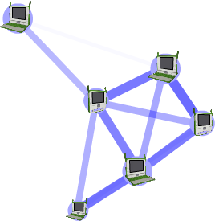
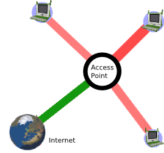
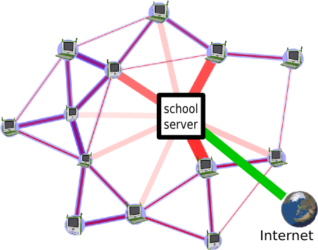

حول الشبكات والإنترنت
ما هي الشبكة؟
شبكة الكمبيوتر هي مجموعة من أجهزة الكمبيوتر المتصلة فيما بينها.
أنواع الشبكات
يتم عادة تصنيف الشيكات حسب الحجم:
الشبكة المحلية (LAN) التي تغطي مساحة جغرافية صغيرة ، مثل المنازل والمكاتب ، أو بناية . شبكة واسعة (WAN) ، تغطي مساحة جغرافية واسعة نسبيا (مثل الربط بين مدينة واحدة و آخرى أودولة وآخرى) ، في المناطق الحضرية شبكة (MAN) الذي يربط عدة شبكات المنطقة المحلية معا ولكن لا تمتد خارج حدود القرية ، بلدة أو مدينة أو منطقة.
في بعض الأحيان يتم وصف الشبكات من قبل الأجهزة التي تربط أجهزة الكمبيوتر : الأقمار الصناعية والألياف البصرية ، إيثرنت ، لاسلكي ، الخ... بعض الشبكات تستخدم الاتصالات السلكية ، في حين أن آخرين استخدام موجات لاسلكية.
يمكنك تسمية الشبكة بناء على علاقتها الفنية : العميل-الخادم ونظير-نظير هي أمثلة جيدة.
وأخيرا ، يمكنك أن تتحدث عن وجود شبكات من الهيكل. طوبولوجيا وسائل العلاقات المنطقية بين الأجهزة. ومن الأمثلة على ذلك : الحافلة ، نجمة ، عيون ، وشجرة.
شبكات XO
نموذج شبكة XO j تتكون من شبكة محلية ، لاسلكي ، نظير إلى نظير( peer-to-peer)، عيون. ومع ذلك ، يدعم اكس (بطريقة مباشرة أو غير مباشرة) مجموعة متنوعة من الشبكات.
السيناريو الأكثر شيوعا الاستفادة من جميع المدمج في أجهزة الراديو اللاسلكية :
* شبكة بسيطة : XOs الحديث مع بعضها البعض دون الحاجة الى الوصول إلى الإنترنت.
* البنية التحتية : يمكن XOs الاتصال بالإنترنت من خلال نقطة وصول الموجودة مسبقا (ا ف ب).
* جهاز خادم المدرسة : XOs يتحدثون مع بعضهم البعض والإنترنت من خلال جهاز خادم المدرسة.

نظام عقدة بسيطة (simple mesh mode)

نظام الشبكة البنية التحتية (infrastructure network)

شبكة باستعمال جهاز الخادم بالمدرسة
جهاز الخادم بالمدرسة
جزء من نموذج نشر أسست المؤسسة هو استخدام خدمة المدرسة. وتهدف هذه الخوادم لتوفير مدخل إلى الإنترنت ، مستودع المحتوى محلي ، حفظ نسخ احتياطية ، وإدارة المدرسة ، والوظائف المحلية الأخرى. ورغم أهمية كل هذه الخدمات إلا أن الأكثر أهمية هو استعماله في توسيع نطاق الشبكة المحلية. بدون استعمال جهاز الخادم بالمدرسة، أكبر شبكة يمكن الحصول عليها هي 20 حاسوب محمول. كل جهاز خادم بالمدرسة يمكنه عمل شبكة من حوالي 120 كمبيوتر محمول.
هناك عدة أسباب لهذا الفرق :
* الحفاظ على المعلومات بواسطة الخادم ، خادم المدرسة يلغي الحاجة لجزء كبير من حركة الإرسال المتعدد ، وهو ما يضع حملا ثقيلا على الشبكة.
* ويمكن لخادم المدرسة توحيد ما يصل الى ثلاث قنوات شبكة منفصلة.
ما هي الإنترنت؟
الإنترنت عبارة عن الترابط في جميع أنحاء العالم من الشبكات الحكومية والأكاديمية والعامة والخاصة. الإنترنت يحمل موارد المعلومات والخدمات المختلفة ، مثل البريد الإلكتروني ، والدردشة ، وثائق ، والألعاب عبر الإنترنت ، والشبكة العالمية (WWW).
أريد الإتصال بالإنترنت!
على الرغم من أن النظام التشغيل يوفر الإرتباط الذاتي بالشبكة المحليةاللاسلكية، الا أن الربط بشبكة الانترنت أمر يجب القيام به على أساس فردي.
دليل المصطلحات التقنية المرتبطة بالأنترنت
شبكة العقد (Mesh Network)
شبكة العقد الاسلكية هي شبكة اتصالات تتكون من عقد لاسلكية التي يمكنها أن تنقل المعلومات الى عقد أخرى بحيث العقد حتى التي ليست في الاتصال اللاسلكي المباشر يمكنها الاتصال عبر العقد الموجودة بينها. مجموع منطقة التغطية للعقد تعمل كشبكة واحدة وتمثل سحابة الشبكة.
وضع الشبكة في نظام البنية التحتية (infrastructure mode)
الاتصال بالشبكة من خلال نقطة وصول واي فاي ، على سبيل المثال نظام 802.11b/g .
نظام العقد (mesh mode)
الإتصال الاسلكي عبر شبكة العقد (نظام توجيه شبكة العقد بروتوكول مستخدم في الكمبيوتر المحمول المبني على 802.11s المصمم من طرف Task Group S 802.11 [http://www.ieee802.org/11/Reports/tgs_update.htm]
نظام عقدة بسيطة (simple mesh mode)
نظام عقد يشتغل بين حواسيب محمولة دون الحاجة الى جهاز خادم بالمدرسة.
نظام العقد بجهاز الخادم
شبكة لاسلكية تشتغل عبر جهاز خادم بالمدرسة
قناة عقدية
تستخدم أجهزة الكمبيوتر المحمولة ثلاث قنوات للاتصال : 1 و 6 و 11 ، في وضع شبكة بسيطة ، وأجهزة الكمبيوتر المحمولة يمكن أن نرى فقط أجهزة الكمبيوتر المحمولة الأخرى على القناة نفسها ، في نظام عقد خادم المدرسة ، أجهزة الكمبيوتر المحمول على جميع قنوات تصبح مرئية.
نقطة الوصول (access point)
هو جهاز يربط أجهزة الاتصالات اللاسلكية معا لتشكيل شبكة اتصال لاسلكية. نقطة الوصول ترتبط عادة بشبكة سلكية ، ويمكن نقل البيانات بين الأجهزة السلكية واللاسلكية. ويمكن ربط عدة نقاط وصول معا لتشكيل شبكة أكبر.
المدخل نقطة شبكة (mesh portal point)
عقدة شبكة تعمل كبوابة إلى شبكة الاتصال خارجة عن العقد.